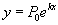
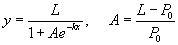

This device cannot display Java animations. The above is a substitute static image
1. Exponential growth and decay
The applet shows the slope field for dy/dx = ky. Move the k slider and see what happens to the slope field and to the solution graph. What happens when k is big? Close to 0? Negative? You can work out through separation of variables that the general solution to this differential equation is

This represents growth when
k is positive and decay when
k is negative. This is a very common differential equation in modeling different kinds of problems, including population growth, interest accumulation, and radioactive decay. In these types of problems the independent variable is usually
t (for time) instead of
x.
In words, the differential equation says "the rate of change of y with respect to x is proportional to y," with k as the constant of proportionality. For positive k, the rate of change gets bigger with bigger y. Also note that P0 is the population for x = 0, usually called the initial population.
2. Logistic growth
Select the second example from the drop down menu, showing dy/dx = ky(1-y/L). Move the k slider to see how this effects the solution curve. Also move the L slider (but keep L > 1) and notice what happens. One of the problems with exponential growth models is that real populations don't grow to infinity. The differential equation in this example, called the logistic equation, adds a limit to the growth. Here, k still determines how fast a population grows, but L provides an upper limit on the population. The solution can be found through separation of variables and is

where
P0 is the initial population.
Other 'Differential Equations' topics
(C) 2011 Copyright Math Open Reference.
All rights reserved